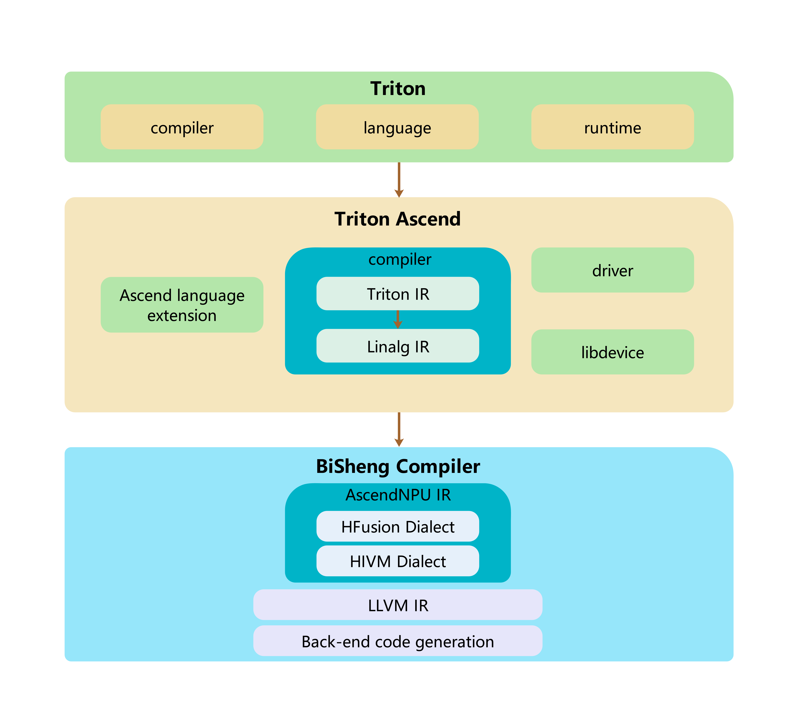

Architecture Design and Core Features
1. Logical Architecture

Triton-Ascend Architecture DescriptionCore components:
Ascend language extension: Triton language extension for Ascendcompiler: Triton compiler for Ascenddriver: Ascend device driver API
Component functions:
Ascend language extension
Syntax and semantic extensions for the Ascend NPU architecture are introduced based on the standard Triton language.compiler
Receives the Triton IR(TTIR)file generated by the upper-layer Triton compiler and performs a series of transformations to adapt to Ascend hardware.Triton IR → Linalg IR → AscendNPU IR → triton_xxx_kernel.o
Converts the Triton IR into the Linalg IR, and then generates the executable binary file
triton_xxx_kernel.ofor the Ascend NPU through the BiSheng Compiler.driver
Provides the interconnection capability between the Triton runtime and the Ascend software stack (CANN), and loads the executable kernel filetriton_xxx_kernel.ogenerated by the BiSheng Compiler on the device side.
2. Code Structure
2.1 Code Structure Principles
This project extends the support for Huawei Ascend NPU (using the CANN software stack) based on the standard Triton. The overall design complies with the following code principles:
If the modification is target independent, it should be retained in the Triton core part (such as general modifications to the language and runtime).
If the modification is target affinitive, it should be placed in the Triton-Ascend part.
2.2 Directory Structure and Function Description
include/ and lib/
Content: MLIR Passes, dialects, and related tools for Ascend NPUs.
Description: Represents and optimizes Ascend-specific computational graphs in the MLIR compilation process.
libdevice.py
Content:
libdeviceAPI adaptable to Ascend NPUs.Description: Provides underlying implementation support for the Ascend NPU hardware, which is called by Triton operators.
backend/compiler.py
Content: Main entry of the
triton-ascendcompiler.Description: Compiles the high-level DSL code of Triton into an executable binary file (such as the
.ofile) that can be executed on the Ascend NPU.
backend/driver.py
Content:
triton-ascenddriver module.Description: Loads and starts the compiled executable binary file.
3. Modules
3.1 Triton Core Enhancement
3.1.1 Language Extension
No. |
Operator |
Description |
|---|---|---|
1 |
|
Inserts a tensor into another tensor according to the specified offset, size, and stride. |
2 |
|
Extracts a slice tensor from another tensor according to the specified offset, size, and stride. |
3 |
|
Reads a tensor with dimensions and returns a single element at the specified offset. |
3.2 Triton-Ascend
3.2.1 Compiler Options
No. |
NPU Option |
Hardware Platform |
Description |
|---|---|---|---|
1 |
multibuffer |
NPU |
Autotune option. It enables or disables the ping-pong pipeline. |
2 |
enable_auto_bind_sub_block |
NPU |
Autotune option (CV-fused kernels only). It enables or disables auto-binding of sub-blocks. |
3 |
enable_hivm_auto_cv_balance |
NPU |
Autotune option (CV-fused kernels only). It enables or disables automatic CV balancing. |
4 |
sync_solver |
NPU |
Autotune option (CV-fused kernels only). It enables or disables the synchronization solver. |
5 |
unit_flag |
NPU |
Autotune option. It enables or disables the sync unit flag. |
6 |
inject_barrier_all |
NPU |
Autotune option. It enables or disables automatic injection of barriers for all operations. |
7 |
inject_block_all |
NPU |
Autotune option. It enables or disables automatic injection of blocks for all operations. |
8 |
limit_auto_multi_buffer_only_for_local_buffer |
NPU |
Autotune option. It restricts automatic multi-buffering only to local buffers. |
9 |
limit_auto_multi_buffer_of_local_buffer |
NPU |
Autotune option. It enables or disables automatic multi-buffering for local buffers. |
10 |
set_workspace_multibuffer |
NPU |
Autotune option. It enables or disables multi-buffering for the workspace. |
11 |
tile_mix_vector_loop |
NPU |
Autotune option (CV-fused kernels only). It enables or disables tiling for vector loops. |
12 |
tile_mix_cube_loop |
NPU |
Autotune option (CV-fused kernels only). It enables or disables tiling for cube loops. |
13 |
disable_auto_inject_block_sync |
NPU |
Autotune option (CV-fused kernels only). It enables or disables automatic injection of block synchronizations. |
14 |
stream |
NPU |
(Optional) Informs the compiler about the NPU stream to use. |
15 |
enable_linearize |
NPU |
Autotune option. It enables or disables the linearization pass. |
16 |
enable_nd2nz_on_vector |
NPU |
Autotune option (CV-fused kernels only). It enables or disables the ND (n-dimensional) to NZ (non-zero) layout transformation. |
17 |
auto_blockify_size |
NPU |
Autotune option. It enables or disables AutoBlockify pass. It is ignored when TRITON_ALL_BLOCKS_PARALLEL is not set |
3.2.2 SIMD Compiler
No. |
Pass |
Purpose |
IR Conversion |
|---|---|---|---|
1 |
triton-to-structured |
linearize |
ttir->ttir |
2 |
triton-to-unstructured |
convert indirect axis to loop |
ttir->ttir |
3 |
triton-to-linalg |
memory/reduction/view/creation/math/arith/linear algebra to linalgir |
ttir->linalgir |
4 |
triton-to-other |
ttir->hivm/hfusion/llvm |
ttir->hivm/hfusion/llvm |
3.2.2.1 TritonToStructured
The integer division and modulo operations in pointer expressions and mask expressions are converted to tensor operations to regenerate OPs such as load and store.
Converter |
Description |
Limitation |
|---|---|---|
RewriteAddPtrOp |
Analyzes the pointer expression ( |
1. The original iteration axis (such as |
CreateAddpr |
Reconstructs a new |
It depends on the valid |
RewriteLoadOp |
Analyzes the |
1. The original iteration axis (such as |
BuildMask |
Reconstructs a new |
Only the |
CreateLoad |
Re-creates/Replaces the original |
The prerequisite steps, such as |
RewriteStoreOp |
Analyzes the |
Same as |
CreateStore |
Re-creates/Replaces the original |
The prerequisite steps, such as |
RewriteAtomicRWMOp |
Handles pointer issues in atomic read/write/modify operations (such as |
Generally, it inherits the same limitations as |
RewriteAtomicCASOp |
Handles pointer linearization issues in atomic compare-and-swap operations (such as |
|
RewriteWhile |
Handles pointer overlapping operations in the |
Complex pointer path transformation that contains conditional branches ( |
RewriteFor |
Handles pointer overlapping operations in the |
3.2.2.2 TritonToUnstructured
No. |
Pass/Converter |
Description |
|---|---|---|
1 |
discrete-mask-access-conversion |
Analyzes and converts the memory access pattern based on the discrete index mask in Triton (for example, |
2 |
triton-to-unstructured |
Converts the tensor operations identified by |
3 |
bubble-up-operation |
Bubbles up |
3.2.2.2.1 discrete-mask-access-conversion
Converter |
Description |
|---|---|
DiscreteMaskStoreConversion |
Analyzes the mask and converts the original store operation into the following sequences if it is non-contiguous: |
DiscreteMaskLoadConversion |
Analyzes the mask and converts the original load operation into the following sequences if it is non-contiguous: |
DiscreteMaskAtomicAddConversion |
Analyzes the mask and converts the original atomic_add operation into the following sequences if it is non-contiguous: |
3.2.2.2.2 triton-to-unstructured
TritonToUnstructured Converter |
Description |
|---|---|
UnstructuredMemAccessConverter<triton::LoadOp> |
Converts LoadOp into a multi-loop scalar load operation. |
UnstructuredMemAccessConverter<triton::StoreOp> |
Converts StoreOp into a multi-loop scalar store operation. |
UnstructuredMemAccessConverter<triton::AtomicRMWOp> |
Converts AtomicRMWOp into a multi-loop scalar atomic operation. |
UnstructuredMemAccessConverter<triton::AtomicCASOp> |
Converts AtomicCASOp into a multi-loop scalar atomic operation. |
3.2.2.2.3 bubble-up-operation
Converter |
Description |
|---|---|
BubbleUpExtract<tensor::ExtractOp> |
Bubbles up extract op, avoiding unnecessary loops in some scenarios. |
BubbleUpExtract<tensor::ExtractSliceOp> |
Bubbles up extract op/extract_slice, avoiding unnecessary loops in some scenarios. |
3.2.2.3 TritonToLinalg
3.2.2.3.1 triton-to-linalg
TritonToLinalg converts ttir to linalg ir.
Converter |
Description |
|---|---|
StoreConverter |
triton::StoreOp to memref::copy |
AddPtrConverter |
triton::AddPtrOp to memref::ReinterpretCast |
GetProgramIDConverter |
triton::GetProgramIdOp to a param in functionOp |
GetNumProgramsConverter |
triton::GetNumProgramsOp to a param in functionOp |
LoadConverter |
triton::LoadOp to memref::copy and bufferization::ToTensorOp |
AtomicRMWConverter |
triton::AtomicRMWOp to linalg::GenericOp |
AtomicCASConverter |
triton::AtomicCASOp to linalg::GenericOp |
MakeRangeConverter |
triton::MakeRangeOp to linalg::GenericOp |
SplatConverter |
triton::SplatOp to linalg::FillOp |
ClampFConverter |
triton::ClampFOp to tensor::EmptyOp, linalg::FillOp |
PreciseDivConverter |
triton::PreciseDivFOp to arith::DivFOp |
ArgMinConverter |
triton::ArgMinOp to linalg::ReduceOp |
ArgMaxConverter |
triton::ArgMaxOp to linalg::ReduceOp |
ReduceConverter |
triton::ReduceOp to linalg::ReduceOp |
ScanConverter |
triton::ScanOp to func::CallOp |
ReshapeConverter |
triton::ReshapeOp to tensor::ReshapeOp |
ExpandDimsConverter |
triton::ExpandDimsOp to tensor::ExpandShapeOp |
BroadcastConverter |
triton::BroadcastOp to linalg::BroadcastOp |
DenseConstantConverter |
arith::ConstantOp to linalg::FillOp |
ExternElementwiseClOpConverter |
triton::ExternElementwiseOp to linalg::MapOp |
TritonMulhiuiConverter |
triton::MulhiUIOp to arith::MulSIExtendedOp |
TritonPreciseSqrtConverter |
triton::PreciseSqrtOp to math::SqrtOp |
AdvanceConverter |
triton::AdvanceOp to memref::ReinterpretCastOp |
TransposeConverter |
triton::TransOp to linalg::TransposeOp |
SplitConverter |
triton::SplitOp to tensor::ExtractSliceOp |
JoinConverter |
triton::JoinOp to tensor::InsertSliceOp |
CatConverter |
triton::CatOp to tensor::InsertSliceOp |
BitcastConverter |
triton::BitcastOp to arith::BitcastOp |
LoopConverter<scf::ForOp> |
scf::ForOp to scf::ForOp |
LoopConverter<scf::WhileOp> |
scf::WhileOp to scf::WhileOp |
YieldConverter |
scf::YieldOp to scf::YieldOp |
GatherConverter |
triton::GatherOp to func::FuncOp |
GatherLoadConverter |
triton::GatherLoadOp to scf::ForOp |
DeviceAssertConverter |
triton::AssertOp to func::FuncOp |
DevicePrintConverter |
triton::PrintOp to func::FuncOp |
MatmulConverter |
triton::DotOp to linalg::MatmulOp |
SortOpConverter |
triton::SortOp to func::FuncOp |
DotScaledConverter |
triton::DotScaledOp to linalg::MatmulOp |
PtrToIntConverter |
triton::PtrToIntOp |
MakeTensorPtrConverter |
triton::PtrToIntOp to arith::IndexCastOp |
3.2.2.4 other passes
Pass |
Description |
Core Converter |
Description |
|---|---|---|---|
triton-to-annotation |
Converts Ascend NPU-specific compilation hint ( |
TritonAnnotationConversion |
Converts |
triton-to-hfusion |
Converts |
TritonHistogramToHFusionConversion |
Converts |
triton-to-hivm |
Processes the block synchronization operations ( |
TritonCustomOpToHIVMSyncOpConversion |
Converts Triton synchronization instructions to HIVM synchronization instructions. |
triton-to-llvm |
Converts the inline assembly operation ( |
ElementwiseInlineAsmOpConversion |
Converts |
3.2.3 Ascend affinitive Operators
No. |
Operator |
Description |
|---|---|---|
1 |
tl.custom_op |
A set of custom operators extended by Ascend NPU, used to support hardware-specific memory access and data movement patterns. For example: |
2 |
tl.compile_hint |
Provides hardware-specific compilation hints to the compiler, which are used to guide the backend optimization policy, resource allocation, or kernel configuration. |
3 |
tl.sync_block_wait( |
Waits for block synchronization. The |
4 |
tl.sync_block_set( |
Sets block synchronization. The |
5 |
tl.sync_block_all( |
Globally synchronizes blocks. The sender broadcasts an event signal ( |